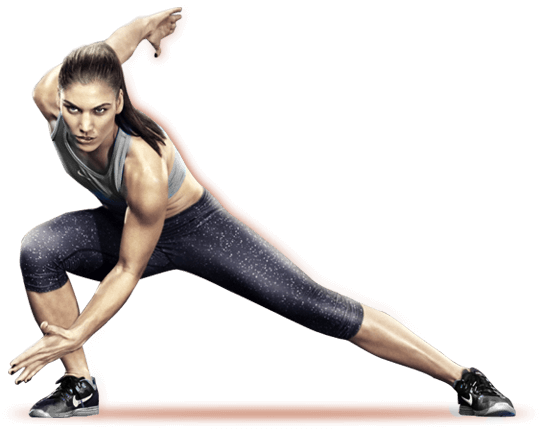
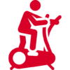
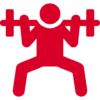

Weight training is a type of stength training that uses weights for resistance. This could be weight machines or free weights, like dumbbells or barbells,at home or a gym . it stresses and strengthens your muscles over time.

The ability of your heart and lungs to supply muscles with oxygen and nutrients. Aerobic exercise, such as walking,jogging,biking or swimming, san help build cardiorrespiratory endurance. The range of motion around a joint eithout pain. Flexibily an help with postuer,performance, and injury risk

Improve their ability to perform daily tasks like dressing,bathing and climbimg stairs.Train in the use of devices and equipment.train in using the phone(IADLs). train their bodies as they would naturally performs a particular sport or task
FitnessHealth 2024 - ❤️All rights reserved | made with ❤️